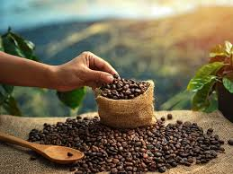

About Coffee
Coffee is one of the world's most popular beverages, enjoyed by millions of people daily. Its rich history dates back to the 15th century in Yemen's highlands.
Popular Brewing Methods
-
Pour Over
A method that involves pouring hot water over ground coffee in a filter, producing a clean and flavorful cup.
-
French Press
A classic immersion method that creates a full-bodied coffee with rich oils and deeper flavors.
-
Espresso
A concentrated form of coffee produced by forcing hot water through finely-ground coffee beans.
Get in Touch
Have questions about coffee? We'd love to hear from you!
Email us at: coffee@example.com